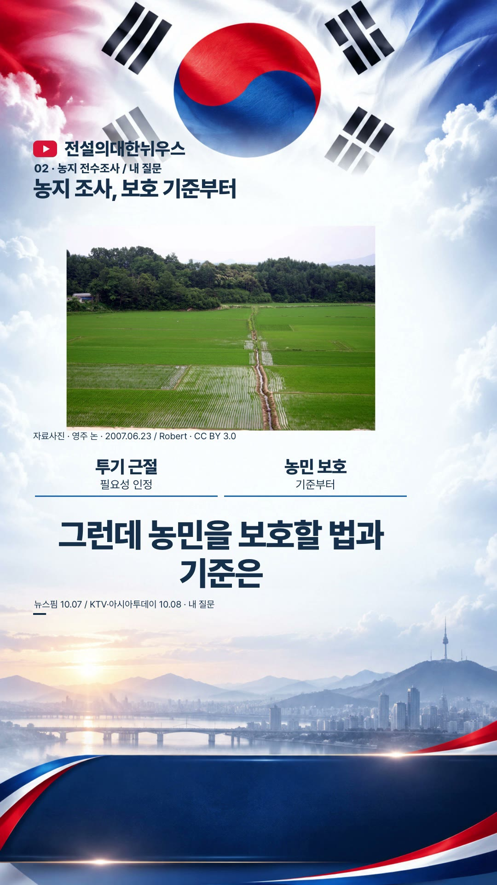
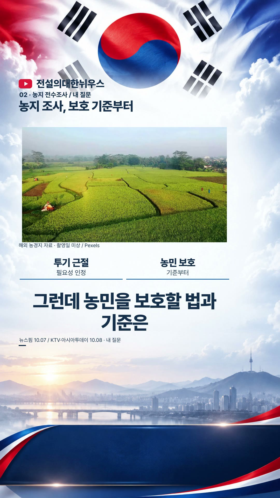
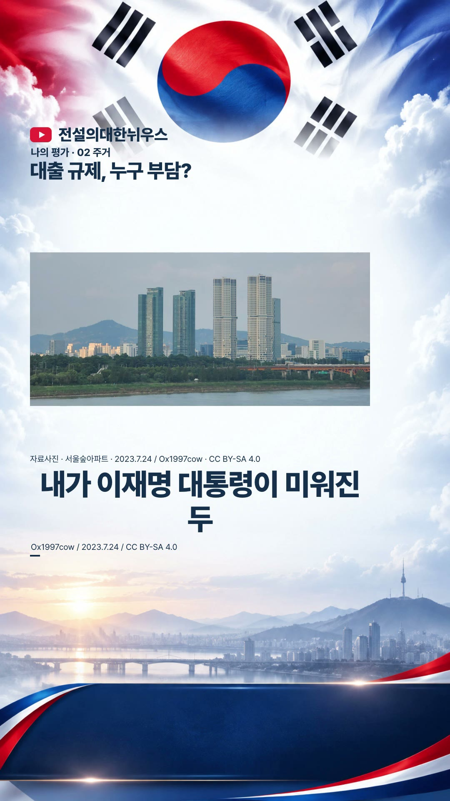
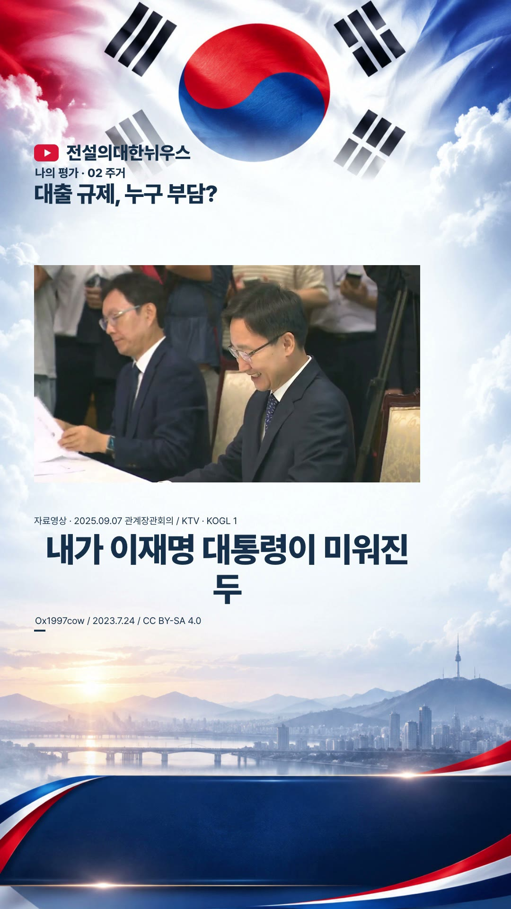
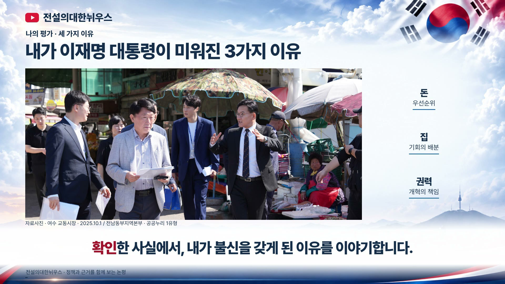
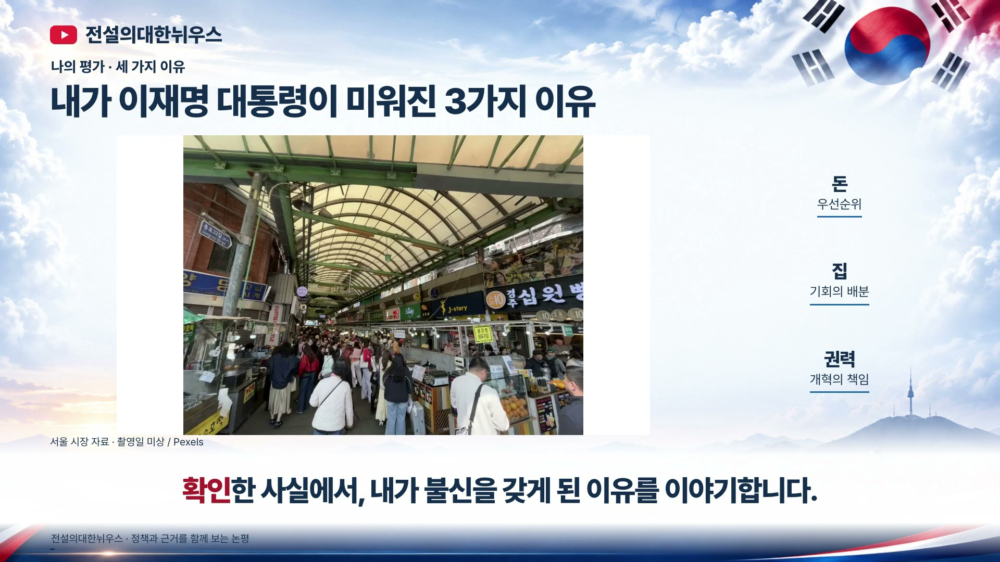

이전 자료 중심 수정본 보기
실제 영상 중심 · 롱폼1편 + 쇼츠9편전설의대한뉘우스
기사마다 실제 장면이 전개됩니다
같은 사진을 오래 보여주던 구간을 현장 영상과 다양한 사진으로 바꿨습니다. 인물과 행동, 전체 현장과 세부 내용을 오가며 설명합니다. 큰 자막과 수치 그래픽, 기존 나레이션은 유지했습니다. 과거 자료와 해외 참고영상의 시점·출처는 컷마다 표시했습니다.
재정 · 162조 계획과 통제
1:26 · 1080×1920 · 더빙·효과음 포함
완성 MP4 다운로드원고·기사 출처
영상 원본 2개 · 사진 원본 4개 · 18컷 · 영상 화면 79%
이전 정적 구성과 새 컷 화면 비교
농지 · 보호 기준과 조사
1:27 · 1080×1920 · 더빙·효과음 포함
완성 MP4 다운로드원고·기사 출처
영상 원본 3개 · 사진 원본 3개 · 19컷 · 영상 화면 73%
이전 정적 구성과 새 컷 화면 비교

수정 전
수정 후안보 · 정보공유 일부 제한
1:28 · 1080×1920 · 더빙·효과음 포함
완성 MP4 다운로드원고·기사 출처
영상 원본 4개 · 사진 원본 1개 · 19컷 · 영상 화면 90%
이전 정적 구성과 새 컷 화면 비교
수정 전수정 후
수사기관 · 독립성
1:28 · 1080×1920 · 더빙·효과음 포함
완성 MP4 다운로드원고·기사 출처
영상 원본 1개 · 사진 원본 0개 · 22컷 · 영상 화면 100%
이전 정적 구성과 새 컷 화면 비교
수정 전수정 후
주택 · 허가와 입주
1:31 · 1080×1920 · 더빙·효과음 포함
완성 MP4 다운로드원고·기사 출처
영상 원본 2개 · 사진 원본 1개 · 21컷 · 영상 화면 82%
이전 정적 구성과 새 컷 화면 비교
녹색전환 · 돈과 성과
1:29 · 1080×1920 · 더빙·효과음 포함
완성 MP4 다운로드원고·기사 출처
영상 원본 6개 · 사진 원본 0개 · 17컷 · 영상 화면 100%
이전 정적 구성과 새 컷 화면 비교
재정 · 소비쿠폰
1:42 · 1080×1920 · 더빙·효과음 포함
완성 MP4 다운로드원고·기사 출처
영상 원본 6개 · 사진 원본 4개 · 25컷 · 영상 화면 77%
이전 정적 구성과 새 컷 화면 비교
주택 · 대출 규제
1:41 · 1080×1920 · 더빙·효과음 포함
완성 MP4 다운로드원고·기사 출처
영상 원본 1개 · 사진 원본 1개 · 24컷 · 영상 화면 76%
이전 정적 구성과 새 컷 화면 비교

수정 전
수정 후수사기관 · 권력 개편
1:37 · 1080×1920 · 더빙·효과음 포함
완성 MP4 다운로드원고·기사 출처
영상 원본 1개 · 사진 원본 0개 · 25컷 · 영상 화면 100%
이전 정적 구성과 새 컷 화면 비교
수정 전수정 후
롱폼 · 세 가지 이의제기
9:37 · 1920×1080 · 더빙·효과음 포함
완성 MP4 다운로드원고·기사 출처
영상 원본 10개 · 사진 원본 7개 · 132컷 · 영상 화면 87%
이전 정적 구성과 새 컷 화면 비교

수정 전
수정 후원본 수·사용 조건과 재생 검사 기록
전체에서 서로 다른 영상 원본24개, 사진 원본13개를 사용했습니다. 동일 원본의 여러 컷과 롱폼·쇼츠 재사용은 원본 수에 중복 계산하지 않았습니다. 각 자료는 정책의 실제 성과·피해나 국감 발언 원음으로 오인되지 않게 구분했습니다.
영상·사진 출처와 사용 조건
중복을 제거한 원본 수
전체 영상·음성 검사 결과
자료·서체 출처
원고·기사 출처는 기존 승인 원고를 따릅니다. 이번 수정본의 새 영상·사진과 컷별 자료 시점·이용 조건은 영상·사진 출처 기록을 확인하세요.
이번 수정본 영상·사진 출처
10/10 기사·사진 출처 · 10/8 기사·영상 출처 · 10/3 기사 출처 · 10/3 사진 · 10/3 영상
Pretendard / Black Han Sans: SIL OFL. 고정 프레임: 채널 제공. Pretendard 이용조건 · Black Han Sans 이용조건.